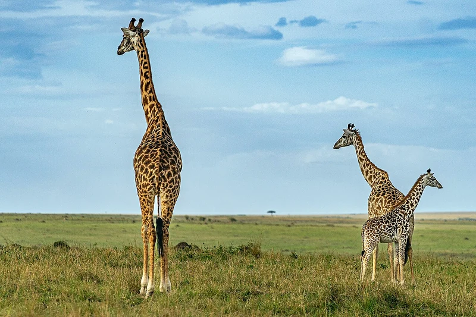

MY JOURNEY
A little collection
of “one day.”
Save the places and journeys that speak to you. You can keep exploring as a guest.
Guest explorerTry demo sign-in

YOUR SHORTLIST
The journeys
you’re drawn to.
Start with a feeling.
Tap the heart on any journey to keep it here. No sign-in needed.
Find my first journeyYOUR TRIP IDEAS
Plans, in the making.
Build your first travel brief and save a demo enquiry. It will appear here for this browsing session.
Start a trip briefLET THE NEXT CHAPTER BE AFRICA
Your colours.
Your kind of adventure.
Come with a plan, or just the beginnings of one. There’s a trail for that.
Start planning